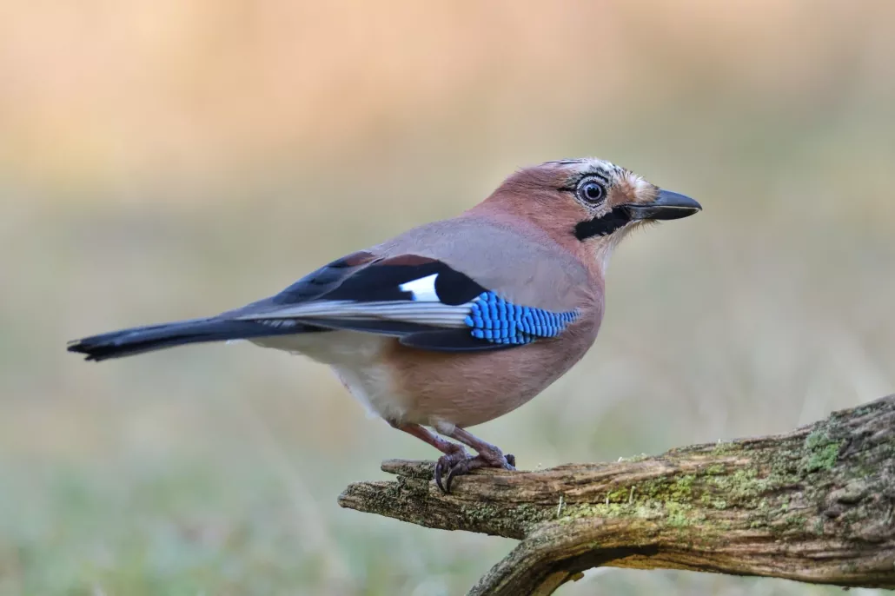

القيقEurasian Jay
Garrulus glandarius
مستوطنResident
يُعرف القيق علميًا باسم Garrulus glandarius، وينتمي إلى فصيلة الغرابيات (Corvidae) ضمن رتبة العصفوريات (Passeriformes)، وهو من أكثر الغربان تلونًا، بريش وردي بني على الجسم وبقعة زرقاء فيروزية مخططة مميزة على الجناح، وذيل وجناحين أسودين، وعرف ريشي صغير قابل للانتصاب فوق الرأس. هذا الطائر مستوطن (R) في العراق، أي يقيم فيه على مدار العام ويتكاثر ضمن أراضيه، ويعيش في الغابات والمناطق الجبلية الحرجية في شمال العراق، حيث يتوفر البلوط وأشجار أخرى ذات ثمار وبذور.
The Eurasian Jay is scientifically known as Garrulus glandarius, belonging to the crow family (Corvidae) within the order Passeriformes. It is among the most colorful of the crow family, with pinkish-brown body plumage and a distinctive striped turquoise-blue patch on the wing, along with a black tail and wings, and a small crest that can be raised above the head. This bird is resident (R) in Iraq, remaining year-round and breeding within its territory, living in forests and mountainous, wooded areas of northern Iraq, where oak and other fruit- and seed-bearing trees are available.
يصنَّف القيق ضمن الأنواع غير المهددة (Least Concern) وفق الاتحاد الدولي لحفظ الطبيعة، بفضل انتشاره الواسع عبر الغابات الأوراسية. ويسهم القيق في النظام البيئي الجبلي العراقي عبر تخزينه لبذور البلوط والجوز في التربة استعدادًا للشتاء، وهو سلوك يُعد من أهم آليات إعادة زراعة أشجار البلوط الطبيعية في الغابات الجبلية، ما يجعله عاملًا حيويًا في تجديد الغطاء الحرجي، ويُعد استقراره في مناطق الغابات الشمالية مؤشرًا على صحة هذه النظم البيئية الجبلية.
The Eurasian Jay is classified as Least Concern by the IUCN, thanks to its wide distribution across Eurasian forests. It contributes to Iraq's mountain ecosystem by caching oak and walnut seeds in the soil in preparation for winter, a behavior considered one of the most important mechanisms for the natural regeneration of oak trees in mountain forests, making it a vital agent in forest cover renewal, and its stability in the northern forest areas indicates the health of these mountain ecosystems.